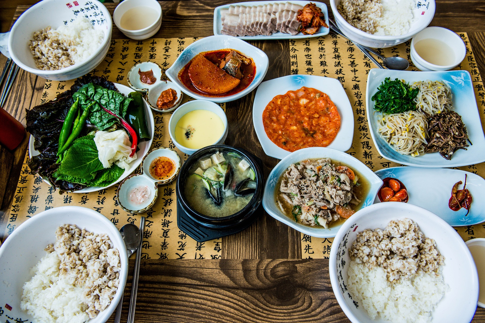

한식의 한류
특징&역사
이색한식
한식한류
한식레시피
한국식 요리의 총칭.
한식(韓食)이라고 부르기도 한다. 주로 한국의 전통식 요리를 뜻하며, 현대적으로 재창조된 한식은 '퓨전 한식' 등으로도 불린다.
한식진흥법에서는 한국에서 사용되어 온 식재료, 그와 유사한 식재료를 사용하여 한국 고유의 조리방법, 그와 유사한 조리방법을 이용하여 만들어진 음식과 그 음식과 관련된 유형·무형의 자원·활동 및 음식문화를
"한식"
으로 정의하고 있다
